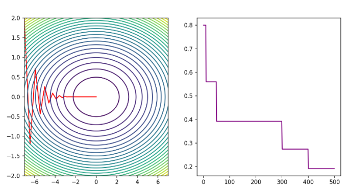
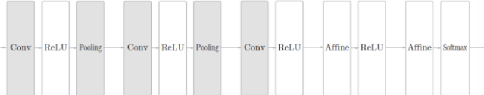
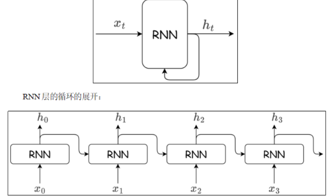

Pytorch
Pytorch 基础
1. 什么是Pytorch
PyTorch是一个开源的Python机器学习库，基于Torch库（一个有大量机器学习算法支持的科学计算框架，有着与Numpy类似的张量（Tensor）操作，采用的编程语言是Lua），底层由C++实现，应用于人工智能领域，如计算机视觉和自然语言处理。
(1) 类似于NumPy的张量计算，能在GPU或MPS等硬件加速器上加速。
(2) 基于带自动微分系统的深度神经网络。
2. Tensor 的创建
2.1 按内容创建
# 直接创建标量
tensor1 = torch.tensor(10.0)
print(tensor1)
print(tensor1.size())
print(tensor1.dtype)
# 根据list创建张量 -- 一维数组
tensor2 = torch.tensor([i for i in range(10)])
print(tensor2)
print(tensor2.size())
print(tensor2.dtype)
# 根据list创建张量 -- 二维数组
tensor3 = torch.tensor(np.array([[j for j in range(10)] for i in range(5)]))
print(tensor3)
print(tensor3.size())
print(tensor3.dtype)
2.2 创建指定形状的张量
此时，调用的方法是torch.Tensor(size),torch.Tensor也可以按内容创建张量，但与torch.tensor不同，torch.Tensor默认数据类型为float32
tensor = torch.Tensor(3, 2, 4)
print(tensor.size())
print(tensor.shape)
print(tensor.dtype)
2.3 指定类型创建
可以通过torch.IntTensor()、torch.FloatTensor()、torch.DoubleTensor()等方法指定tensor的数据类型。或者是通过torch.tensor()方法指定数据类型dtype。
对于Tensor，有long, int, short, byte, double, float, half, bool
对于tensor，有int64, int32, int16, uint8（无符号）, float64, float32, float16, bool
# int(32)
tensor1 = torch.tensor([0 for i in range(10)], dtype=torch.int32)
tensor2 = torch.IntTensor(10)
print(tensor1)
print(tensor2)
# long
tensor1 = torch.tensor([i for i in range(5)], dtype=torch.int64)
tensor2 = torch.LongTensor(10)
print(tensor1)
print(tensor2)
# double
tensor1 = torch.tensor([1, 2, 3], dtype=torch.float16)
tensor2 = torch.HalfTensor(3, 4)
print(tensor1)
print(tensor2)
2.4 按照区间创建一维张量
# torch.arange(start, end, step) 前闭后开
tensor1 = torch.arange(10, 30, 2)
tensor2 = torch.arange(6)
# torch.linspace(start, end, num) 前闭后闭
tensor3 = torch.linspace(10, 30, 5)
# torch.logspace(start, end, steps, base=10.0, *, out=None, dtype=None, layout=torch.strided, device=None, requires_grad=False)
tensor4 = torch.logspace(10, 30, 5, base=2)
print(tensor4)
2.5 按数值填充创建张量
# torch.zeros(size)
tensor = torch.zeros(3, 4)
# torch.ones(size)
tensor = torch.ones(3, 4)
# torch.full(size, value)
tensor = torch.full((3, 4), 5)
# torch.empty(size)
tensor_empyt = torch.empty(3, 4)
# torch.zeros_like(tensor)
tensor_zeros_like = torch.zeros_like(tensor)
# torch.ones_like(tensor)
tensor_ones_like = torch.ones_like(tensor)
# torch.full_like(size, value)
tensor_full_like = torch.full_like(tensor, 666)
# torch.empty_like(tensor)
tensor_empty_like = torch.empty_like(tensor)
# torch.eye(size) 生成单位矩阵
tensor = torch.eye(3)
2.6 按随机值创建张量
1）torch.rand(size)创建在 [0,1)上均匀分布的，指定形状的张量
2）torch.randint(low, high, size)创建在 [low,high)上均匀分布的，指定形状的张量
3）torch.randn(size)创建标准正态分布的，指定形状的张量
4）torch.normal(mean,std,size)创建自定义正态分布的，指定形状的张量
5）torch.rand_like(input)创建在 [0,1)上均匀分布的，与给定张量形状相同的张量
6）torch.randint_like(input, low, high)创建在 [low,high)上均匀分布的，与给定张量形状相同的张量
7）torch.randn_like(input)创建标准正态分布的，与给定张量形状相同的张量
# torch.rand(size)
tensor = torch.rand(3, 4) # x ~ U(0,1)
# torch.randn(size)
tensor = torch.randn(3, 4) # x ~ N(0,1)
# torch.randint(low, high, size) 前闭后开
tensor = torch.randint(0, 10, (10, 10)) # x ~ U(low,high)
# torch.normal(mean, std, size) # x ~ N(mean,std)
tensor = torch.normal(*[0, 1], size=(3, 4))
# 其他就是三个与上面方法对应的like方法，注意：torch.normal没有like方法
2.7 随机排列与随机种子
tensor = torch.randperm(10) # 先生成一个序列，再随机打乱
print(tensor)
# 查看随机数种子
print(torch.random.initial_seed())
# 设置随机数种子
torch.manual_seed(42)
3. Tensor 的转换
3.1 张量的类型转换（不是原地操作，而是开辟新的内存空间）
1）Tensor.type(torch.dtype)
tensor = torch.tensor([1, 2, 3, 4, 5, 6, 7, 8, 9, 10])
print(tensor.dtype)
tensor = tensor.type(torch.float32)
print(tensor.dtype)
2）Tensor.xxx类型().. or Tensor.to(xxx类型)
tensor = torch.Tensor(3, 4)
# 两种转换方式
tensor1 = tensor.to(torch.float64)
tensor2 = tensor.to(torch.int32)
tensor3 = tensor.short()
# 输出结果
print(tensor.dtype)
print(tensor1.dtype)
print(tensor2.dtype)
print(tensor3.dtype)
3.2 Tensor 与 Ndarray 的转换
1）Tensor 转 Ndarray \(\to\) Tensor.numpy（）注：该方法生成的 Ndarray 与 原始 Tensor 共享同一块地址空间
# 设置打印方式---和numpy完全一样
np.set_printoptions(precision=6)
torch.set_printoptions(precision=6)
# tensor 转为 numpy tensor.numpy()
tensor = torch.randn(3, 3)
arr = tensor.numpy()
print(tensor)
arr[0, :] = -1.0
print(arr)
print(tensor)
# 避免共享同一内存空间
tensor = torch.randn(2, 3)
arr = tensor.numpy().copy()
print(tensor)
arr[0, 0] = 0
print(tensor)
2）torch.from_numpy(array) 将 numpy 数组转换成 Tensor
arr = np.array([[j * 1.0 for j in range(5)] for i in range(3)])
# 共享内存，如果想不共享内存的话，可以用torch.tensor(array)
tensor = torch.from_numpy(arr)
tensor_t = torch.tensor(arr)
arr[:, 0] = 666.666
print(tensor_t)
print(tensor)
3.3 Tensor 转为标量
当 Tensor 只有一个元素时，可以用 Tensor.item() 将它转为标量
# 当tensor只有一个元素时，Tensor.item()可以提取改数值
print(torch.randn(1).item())
3.4 Tensor 转为转秩
# 1.如果只对最后二维转秩，也就是对矩阵转秩，直接x.mT即可
tensor1.mT
# 2.自由的转秩两维
tensor1.transpose(dim1, dim2)
# 3.重新排列所有维度
tensor1.permute(dim1, dim1, ... , dimn)
4. Tensor 之间的运算
张量之间的大部分运算都有三个，如 +、Tensor.add()、Tensor.add_()，当然，有些运算没有重载运算符，比如 Tensor.log()、Tensor.exp()
其中、带下划线的代表原地操作，也就是节省内存，对于基本运算，等价于 x += y （不开辟新的内存，直接把结果放到 x 上）
4.1 基本运算
1. 四则运算
+, -, *, / 加减乘除，不改变原数据
t.add(), t.sub(), t.mul(), t.div() 加减乘除，不改变原数据
t.add_(), t.sub_(), t.mul_(), t.div_() 加减乘除，改变原数据
2. -、neg()、neg_()
tensor1 = torch.tensor([1, 2, 3])
print(-tensor1)
print()
print(tensor1.neg())
print(tensor1)
print()
print(tensor1.neg_())
print(tensor1)
3. **、pow()、pow_()
tensor = torch.tensor([1, 2, 3], dtype=torch.float32)
print(tensor**2)
print(tensor.pow(2))
print(tensor)
print(tensor.pow_(2))
print(tensor)
4. sqrt()、sqrt_()
print(tensor.sqrt())
print(tensor.sqrt_())
5. 其他运算
log(), log_()
exp(), exp_()
4.2 哈达玛积 t1 * t2 | t1.mul(t2)
# 张量的对应位置元素相乘，进行计算的张量维度相同
tensor1 = torch.tensor([[1, 3], [2, 4]])
tensor2 = torch.tensor([[2, 4], [1, 3]])
print(tensor1.mul(tensor2))
4.3 张量乘法
mm()严格用于二维矩阵相乘。
@、matmul()支持多维张量，按最后两个维度做矩阵乘法，其他维度相同，或者至少一个张量对应维度为1，广播后进行运算。
tensor1 = torch.randn(2, 2, 3, 3)
tensor2 = torch.randn(2, 2, 3, 10)
t = tensor1 @ tensor2
print(t.size())
5. Tensor 的一些统计方法
1) sum()求和
2) mean()求均值
3) max()/min()求最大/最小值及其索引
4) argmax()/argmin()求最大值/最小值的索引
5) std()求标准差
6) unique()去重
7) sort()排序
注：这写方法搞清楚维度 dim 的影响即可，非常简单。
6. Tensor 的索引操作
6.1 简单索引
也就是直接给个坐标就完事了。
# 1. 简单索引 直接给坐标
print(tensor1[1, 2, 3])
6.2 范围索引
以三维张量举例,其他维度一样 t[st:ed:step, st:ed:step, st:ed:step]， tensor要求步长必须大于0, 而numpy则没有限制
print(tensor1[:, :, 0:2])
print(tensor1[0, ::2, :])
6.3 列表索引
1）各维度索引列表长度必须一致，实现一对一元素选择
print(tensor1[[0, 1, 2], [1, 2, 3], [1, 2, 3]])
print(tensor1[[0, 1, 2], [0, 1, 2]])
2）列表嵌套索引：支持广播机制，内层列表可实现一对多映射关系
# 列表的嵌套 : 不嵌套是一对一, 嵌套就是 一对多
print(tensor1[[[0], [1]], [1, 2]])
6.4 布尔索引
布尔索引 : 用条件判断表达式,生成一个高维布尔数组,再把这个高维布尔数组作为索引,返回满足条件的元素
1）选择某些行
# 选取符合条件的某些行:比如说首元素大于5
mask = tensor1[:, :, 0] > 5
print(tensor1[mask])
2）选择某些列
# 选择所有列的首元素小于3的列
mask = tensor1[:,0,:] < 3 # 当前mask是(3, 4), 而tensor1是(3, 5, 4),所以不能直接应用
# 先把 tensor1 转秩为 (3, 4, 5), 然后再应用
tensor2 = tensor1.mT
print(tensor2[mask].mT)
3）选择某些矩阵
# 选取符合条件的矩阵
# 比如当前要选择的矩阵是(1, 2) > 5
mask = tensor1[:, 1, 2] > 5
print(mask)
print(tensor1[mask])
4）选择某些元素
mask = tensor1 > 5
print(tensor1[mask])
7. Tensor 的形状操作
7.1 维度交换
1）Tensor.transpose()交换两个维度 注意：在numpy中，transpose就是permute
print(tensor.transpose(0,1).shape)
2）Tensor.permute
tensor = torch.rand(3, 4, 5)
print(tensor.permute(2, 1, 0).shape)
3）Tensor.mT：直接交换矩阵的维度
7.2 Tensor 的形状转换（array的Reshape)
1）Tensor.reshape(size) reshape 并不总是开辟额外内存，只有在必要时才会创建新的内存副本。
# reshape
tensor = torch.randint(1, 10, (3, 5, 4))
print(tensor.reshape(3, -1))
2）Tensor.view(size) 需要内存连续。共享内存
# view
tensor.is_contiguous()
tensor.view(-1, 3)
7.3 增加或删除维度
1）Tensor.unsqueeze(dim) 增加维度
# 原张量形状: torch.Size([3, 4])
tensor = torch.rand(3, 4)
t1 = tensor.unsqueeze(0) # 形状变为: torch.Size([1, 3, 4])
print(t1.shape)
t2 = tensor.unsqueeze(1) # 形状变为: torch.Size([3, 1, 4])
print(t2.shape)
t3 = tensor.unsqueeze(-1) # 形状变为: torch.Size([3, 4, 1])
print(t3.shape)
2）Tensor.squeeze(dim=None) 删除张量中大小为1的维度
说明：当指定 dim 参数时，只删除指定维度（如果该维度大小为1）当不指定 dim 参数时，删除所有大小为1的维度
# 原张量形状: torch.Size([1, 3, 1, 4])
tensor = torch.rand(1, 3, 1, 4)
t1 = tensor.squeeze() # 删除所有大小为1的维度，形状变为: torch.Size([3, 4])
print(t1.shape)
t2 = tensor.squeeze(0) # 删除第0维，形状变为: torch.Size([3, 1, 4])
print(t2.shape)
t3 = tensor.squeeze(2) # 删除第2维，形状变为: torch.Size([1, 3, 4])
print(t3.shape)
t4 = tensor.squeeze(-2) # 删除倒数第2维，形状变为: torch.Size([1, 3, 4])
print(t4.shape)
8. Tensor 的拼接操作
8.1 torch.cat(tensors, dim=0, *, out=None)
- 沿指定维度连接多个张量
- 除连接维度外，其他维度的大小必须相同
# torch.cat
tensor1 = torch.randint(1, 10, (2, 3, 5))
tensor2 = torch.randint(1, 10, (2, 2, 5))
t = torch.cat([tensor1, tensor2], dim=1)
t
8.2 torch.stack(tensors, dim=0, *, out=None)
9. Pytorch 的自动微分引擎：torch.autograd
训练神经网络时，框架会根据设计好的模型构建一个计算图（computational graph），来跟踪计算是哪些数据通过哪些操作组合起来产生输出，并通过反向传播算法来根据给定参数的损失函数的梯度调整参数（模型权重）。
PyTorch具有一个内置的微分引擎torch.autograd以支持计算图的梯度自动计算。
考虑最简单的单层神经网络，具有输入x、参数w、偏置b以及损失函数：

import torch
# 定义输入数据和真实标签
x = torch.tensor([[1.0]]) # 输入数据
y_true = torch.tensor([[2.0]]) # 真实标签
# 初始化模型参数，requires_grad=True表示需要计算梯度
w = torch.randn(1, 1, requires_grad=True) # 权重
b = torch.randn(1, requires_grad=True) # 偏置
# 前向传播：计算 z = x * w + b
z = x * w + b
print(z) # 输出带有grad_fn的计算结果
# 定义损失函数并计算损失值
loss = torch.nn.MSELoss() # 均方误差损失函数
loss_value = loss(z, y_true) # 计算预测值z与真实值y_true的损失
print(loss_value) # 输出损失值
# 反向传播：自动计算梯度
loss_value.backward()
# 输出参数的梯度
print(w.grad) # 权重的梯度
print(b.grad) # 偏置的梯度
# 检查张量是否为叶子节点
print(x.is_leaf) # True: 用户创建的张量
print(y_true.is_leaf) # True: 用户创建的张量
print(z.is_leaf) # False: 计算得到的中间变量
print(loss_value.is_leaf) # False: 计算得到的中间变量
自动微分的关键就是记录节点的数据与运算。数据记录在张量的data属性中，计算记录在张量的grad_fn属性中。
计算图根据搭建方式可分为静态图和动态图，PyTorch是动态图机制，在计算的过程中逐步搭建计算图，同时对每个Tensor都存储grad_fn供自动微分使用。
若设置张量参数requires_grad=True，则PyTorch会追踪所有基于该张量的操作，并在反向传播时计算其梯度。依赖于叶子节点的节点，requires_grad默认为True。当计算到根节点后，在根节点调用backward()方法即可反向传播计算计算图中所有节点的梯度。
非叶子节点的梯度在反向传播之后会被释放掉（除非设置参数retain_grad=True）。而叶子节点的梯度在反向传播之后会保留（累积）。通常需要使用optimizer.zero_grad()清零参数的梯度。
10. Tensor 与计算图的分离
有时我们希望将某些计算移动到计算图之外，可以使用Tensor.detach()返回一个新的变量，该变量与原变量具有相同的值（共享内存），但丢失计算图中如何计算原变量的信息。换句话说，梯度不会在该变量处继续向下传播。
# 当我们需要对计算图中的某些张量进行独立处理，同时又不希望影响原有计算图结构时，可以采用以下几种解决方案：
x = torch.rand(2, 2, requires_grad=True)
y = x.detach()
print(x)
print(y)
# 尽管 x 与 y 的 id 不同，但他们的数据是共享的。
print(x.untyped_storage().data_ptr())
print(y.untyped_storage().data_ptr())
如果在一个代码段中都不希望对计算图产生影响，直接用：with torch.no_grad() 上下文管理器即可。
当然，最简单粗暴的方式就是tensor.clone()，然后对副本进行操作。
Pytorch 进阶
1 激活函数
# 在pytorch中，能用到的激活函数几乎都被实现了，我们可以直接调用他们。
torch.sigmoid(input)
torch.tanh(input)
torch.relu(input, inplace=False)
torch.relu6(input, inplace=False)
torch.leaky_relu(input, negative_slope=0.01, inplace=False)
torch.prelu(input, weight)
torch.elu(input, alpha=1.0, inplace=False)
torch.selu(input, inplace=False)
torch.gelu(input, approximate='none')
torch.swish(input)
torch.mish(input)
torch.logsigmoid(input)
torch.softplus(input, beta=1, threshold=20)
torch.softmax(input, dim)
torch.log_softmax(input, dim)
torch.hardsigmoid(input, inplace=False)
torch.hardswish(input, inplace=False)
torch.hardtanh(input, min_val=-1.0, max_val=1.0, inplace=False)
2 一些神经网络层
1. nn.Linear 类
torch.nn.Linear(in_features, out_features, bias=True, device=None, dtype=None)
# 重要属性
linear.weight
linear.bias
x. nn.Dropout 类
# 这是所有Dropout的父类
class _DropoutNd(Module):
__constants__ = ["p", "inplace"]
p: float
inplace: bool
def __init__(self, p: float = 0.5, inplace: bool = False) -> None:
super().__init__()
if p < 0 or p > 1:
raise ValueError(
f"dropout probability has to be between 0 and 1, but got {p}"
)
self.p = p
self.inplace = inplace
def extra_repr(self) -> str:
return f"p={self.p}, inplace={self.inplace}"
# 实例化dropout实例
dropout = nn.Dropout(p, inplace)
# 调用forward
dropout(input)
3 参数的初始化
参数的初始化：可以把对应参数的data拿出来直接改，或者用nn.init()去修改。具体初始化方法如下：
1. 常数初始化
# 常数初始化
# 方法一，直接全部置为0 nn.init.zeros_(input)
nn.init.zeros_(linear1.weight)
print(linear1.weight)
# 方法二，可以置为任意常数 nn.init.constant_(input, value)
nn.init.constant_(linear1.weight,0)
print(linear1.weight)
2. 秩初始化
nn.init.eye_(linear.weight)
3. 随机初始化
# 正态分布初始化
nn.init.normal_(linear1.weight, mean=0, std=0.01)
print(linear1.weight)
# 均匀分布初始化
nn.init.uniform_(linear1.weight, -1, 1)
4. Xavier初始（当后面的激活函数是：Sigmoid, Tanh 这类 S 型曲线）
# Xavier 初始化
nn.init.xavier_normal_(linear1.weight)
print(linear1.weight)
nn.init.xavier_uniform_(linear1.weight)
print(linear1.weight)
5. He 初始化（KaiMing 初始化，主要用到后面是Relu 这类激活函数的Linear）
# KaiMing 初始化
nn.init.kaiming_normal_(linear1.weight)
print(linear1.weight)
nn.init.kaiming_uniform_(linear1.weight)
print(linear1.weight)
4 搭建神经网络
1. 自定义模型
在神经网络框架中，由多个层组成的组件称之为 模块（Module）。
在PyTorch中模型就是一个Module，各网络层、模块也是Module。Module是所有神经网络的基类。
在定义一个Module时，我们需要继承torch.nn.Module并主要实现两个方法：
\__init__：定义网络各层的结构，并初始化参数。
forward：根据输入进行前向传播，并返回输出。计算其输出关于输入的梯度，可通过其反向传播函数进行访问（通常自动发生）。forward方法是每次调用的具体实现。
class MyModel(nn.Module):
def __init__(self):
super().__init__()
# 定义网络结构
self.linear1 = nn.Linear(3, 4)
self.linear2 = nn.Linear(4, 4)
self.linear3 = nn.Linear(4, 2)
# 初始化网络参数
nn.init.xavier_normal_(self.linear1.weight)
nn.init.kaiming_normal_(self.linear2.weight)
def forward(self, x):
z1 = torch.tanh(self.linear1(x))
z2 = torch.relu(self.linear2(z1))
return torch.softmax(self.linear3(z2), dim=1)
2. 查看模型参数
# 查看模型参数
# 最简单的方法 直接从对应的层中查看
print(net.linear1.weight)
# 第二种，调用model.parameters()获取不同层的参数，一般用net.named_parameters()，可以获得当前层的名字
for name, param in net.named_parameters():
print(name, '\n', param.data)
# 第三种，去得到保存参数的dict
d = net.state_dict()
for k, v in d.items():
print(k, v)
3. 查看模型结构和参数数量
第三方库：torchsummary.summary(net, input_size, batch_size, device)
# 查看模型结构与参数数量
from torchsummary import summary
summary(net, (3,), batch_size=10, device='cpu')
4. device 的设置
不用创建一层指定一层，而是在创建模型时直接给一个 device 值就可以了，或者创建完以后用 net.to("cuda")
# 在创建张量的时候指定设备
input = torch.randn(1, 3, 224, 224, device='cuda')
print(input.device)
# 通过 tensor.to 去将张量换到 cuda 上
tensor.to(device='cuda')
5. 使用 Sequential 构建模型 非常好使！！！！
可以通过torch.nn.Sequential来构建模型，将各层按顺序传入。注：此时把激活函数也当成了一层，所以要调nn.Tanh，而不再是传统前向传播直接 torch.xxx 函数这样去计算了。
Sequential类使模型构造变得简单，不必自定义类就可以组合新的架构。然而并不是所有的架构都是简单的顺序架构，当需要更强的灵活性时还是需要自定义模型。
# 使用sequential去创建模型
model = nn.Sequential(
nn.Linear(3, 4),
nn.Tanh(),
nn.Linear(4, 4),
nn.ReLU(),
nn.Linear(4, 2),
nn.Softmax(dim=1)
)
print(model)
model.apply() 是PyTorch中 nn.Module 类的一个重要方法，用于对模型中的每个模块递归地应用一个函数。
# 参数初始化
def init_weights(m):
if type(m) == nn.Linear:
torch.nn.init.xavier_uniform_(m.weight)
m.bias.data.fill_(0.01)
model.apply(init_weights)
5 损失函数
1. BCE
二分类任务常用二元交叉熵损失函数（Binary Cross-Entropy Loss）
注：这里的 input 和 target 维度一定要一样，如果是（10，3），那么就代表着有10个样本，要对每个样本做三个并行的二分类任务，也就是一个样本的 targer 如果是（1，1，0），就代表这个样本是类别0，类别1，不是类别2。
# pytorch代码：
loss = nn.BCELoss()
loss_val = loss(y_hat, t)
2. 多分类任务损失函数
多分类任务常用多类交叉熵损失函数（Categorical Cross-Entropy Loss）。它是对每个类别的预测概率与真实标签之间差异的加权平均。
在PyTorch中可使用torch.nn.CrossEntropyLoss 实现：(自动做了Softmax，其次，target可以是类别索引，类型必须为long，还可以是独热编码，也就是相对于的概率分布)
import torch
import torch.nn as nn
# 真实值为标签
target = torch.tensor([1, 0, 3, 2, 5, 4]) # 真实值
input = torch.randn((6, 8)) # 预测值
loss = nn.CrossEntropyLoss() # 实例化损失函数
print(loss(input, target))
# 真实值为概率
target = torch.randn(6, 8).softmax(dim=1) # 真实值
input = torch.randn((6, 8)) # 预测值
loss = nn.CrossEntropyLoss() # 实例化损失函数
print(loss(input, target))
3. MAE
平均绝对误差（Mean Absolute Error，MAE），也称L1 Loss，L2 就是取了个平方项，故省略不写。
l1 = nn.L1Loss()
l2 = nn.MSELoss()
6 优化算法
1. Momentum
而 Momentum（动量法）会保存历史梯度并给予一定的权重，使其也参与到参数更新中：
动量法演示如下：通过动量法去找到函数 f(x) 的最小值，效果如下图：

2. 学习率衰减
1）等间隔衰减
torch.optim.lr_scheduler.StepLR(optimizer, step_size, gamma=0.1, last_epoch=-1, verbose=False)
# 用法
# 定义学习率衰减
scheduler = optim.lr_scheduler.StepLR(optimizer, step_size=step_size, gamma=gamma)
# 更新学习率
scheduler.step()
| 参数名 | 类型 | 含义 |
|---|---|---|
optimizer |
torch.optim.Optimizer |
要调整学习率的优化器对象（例如 optim.SGD、optim.Adam 等）。 |
step_size |
int |
每隔多少个 epoch 下降一次学习率。 |
gamma |
float, 默认 0.1 |
学习率衰减因子（乘法因子）。即：new_lr = old_lr * gamma。 |
last_epoch |
int, 默认 -1 |
上一个 epoch 的编号（用于从中断处恢复训练时指定）。 |
verbose |
bool, 默认 False |
若为 True，每次更新学习率时会打印日志信息。 |

2）指定间隔衰减
torch.optim.lr_scheduler.MultiStepLR(optimizer, milestones, gamma)
# milestones 是一个可迭代容器，存放要在那些 epoch 衰减学习率

3）指数衰减
scheduler_expo = optim.lr_scheduler.ExponentialLR(optimizer, 0.99)

3. Adagrad
optimizer = optim.Adagrad([X], lr=lr)
4. RMSprop
相较于 Adagrad，RMSProp 在动态调整学习率的方式上进行了改进。在 Adagrad 中，学习率会被过去所有梯度平方的累积和所除，以此实现自适应调整。梯度平方和越大，说明该参数已经被充分学习，因而其学习率会逐渐减小。然而，这种累积方式会导致在训练后期学习率趋近于零，从而影响模型的进一步收敛。
为了解决这一问题，RMSProp 引入了指数加权移动平均（Exponential Moving Average, EMA）*机制，用于计算梯度平方的加权平均值，从而*逐步遗忘旧梯度信息，保持学习率在一个合适的动态范围内。 其核心思想可表示为：
其中，\(\alpha\) 表示衰减系数，用于控制历史梯度的“遗忘速度”。
optimizer = optim.RMSprop([X], lr=lr, alpha=0.2)
5. Adam
pass
CNN
1 CNN概述
卷积神经网络（Convolutional Neural Network，CNN）常被用于图像识别、语音识别等各种场合。它在计算机视觉领域表现尤为出色，广泛应用于图像分类、目标检测、图像分割等任务。
卷积神经网络的灵感来自于动物视觉皮层组织的神经连接方式，单个神经元只对有限区域内的刺激作出反应，不同神经元的感知区域相互重叠从而覆盖整个视野。
CNN中新出现了卷积层（Convolution层）和池化层（Pooling层），下图是一个CNN的结构：

2 输出维度计算公式
假设输入数据形状为 \((H, W)\)，卷积核大小为 \((FH, FW)\)，填充（padding）为 \(P\)，步幅（stride）为 \(S\)，输出数据形状为 \((OH, OW)\)，则可得：
📌 示例
例如，对于形状为 \((4, 4)\) 的输入数据，应用幅度为 1 的填充（即 \(P = 1\)），并使用步幅 \(S = 3\)，卷积核大小为 \((3, 3)\) 的卷积运算：
得到形状为 \((2, 2)\) 的输出数据。
⚠️ 注意事项
当输出大小无法整除时，PyTorch 卷积层会自动向下取整，输出整数尺寸，舍弃无法覆盖完整卷积核的输入部分。
✅ 也就是说：实际计算中使用的是 地板除法（floor division），即：
💡 小贴士
| 参数 | 含义 |
|---|---|
| \(H, W\) | 输入高度、宽度 |
| \(FH, FW\) | 卷积核高度、宽度 |
| \(P\) | 填充大小（padding） |
| \(S\) | 步幅（stride） |
| \(OH, OW\) | 输出高度、宽度 |
3 Pytorch 中的 CNN
1、卷积层
在深度学习框架中，二维卷积层（如 PyTorch 的 Conv2d）的初始化函数通常定义了卷积的基本参数。以下是其标准函数签名及参数说明。
✅ PyTorch 风格函数签名
torch.nn.Conv2d(
in_channels, # 输入通道数（C_in）
out_channels, # 输出通道数（C_out）
kernel_size, # 卷积核大小（FH, FW）
stride=1, # 步幅（S）
padding=0, # 填充大小（P）
dilation=1, # 膨胀率（空洞卷积）
groups=1, # 分组卷积参数
bias=True, # 是否使用偏置项
padding_mode='zeros'
)
2、池化层
池化层用于对特征图进行下采样（downsampling），降低空间维度（高度和宽度），减少计算量并增强特征的尺度不变性。常见类型有最大池化（Max Pooling）和平均池化（Average Pooling）。
torch.nn.MaxPool2d(
kernel_size, # 池化窗口大小 (H_k, W_k)
stride=None, # 步幅，若为 None 则默认等于 kernel_size
padding=0, # 填充大小
dilation=1, # 膨胀率（通常用于空洞池化，较少使用）
return_indices=False, # 是否返回最大值索引（用于 MaxUnpool）
ceil_mode=False # 是否使用向上取整模式
)
当 d = 1时，也就是大部分情况：
NLP 处理
1. 词嵌入层
1.1 什么是词嵌入
然语言是由文字构成的，而语言的含义是由单词构成的。即单词是含义的最小单位。因此为了让计算机理解自然语言，首先要让它理解单词含义。
词向量是用于表示单词意义的向量，也可以看作词的特征向量。将词映射到向量的技术称为 词嵌入（Word Embedding）。
还有一种使用向量表示单词意义的方式是独热向量，独热向量很容易构建，但它们通常不是一个好的选择。一个主要原因是独热向量不能准确表达不同词之间的相似度。比如使用余弦相似度 \(\frac{x^{T}y}{||x||||y||}\) 来表示两个词之间的相似程度，由于任意两个不同词的独热向量之间的余弦相似度为0，所以独热向量不能编码词之间的相似性。另一个原因是随着词汇量的增大，独热向量表示的向量大小也会增大，在词汇量较大的情况下会消耗大量的存储资源与计算资源。
将词转换为词向量时：
1）首先需要对文本进行分词，再根据需要进行清洗和标准化。
2）构建词表（Vocabulary），每个词对应一个索引。
3）使用词嵌入矩阵将词索引转换为词向量。
1.2 API 使用
可使用torch.nn.Embedding来初始化词嵌入矩阵：
torch.nn.Embedding(num_embeddings, embedding_dim)
# num_embeddings:词的数量
# embedding_dim:词向量的维度
text = "自然语言是由文字构成的，而语言的含义是由单词构成的。即单词是含义的最小单位。因此为了让计算机理解自然语言，首先要让它理解单词含义。"
original_words = jieba.lcut(text)
print(original_words)
# 自定义一组停用词
stopwords = {'的','，' ,'。', '是','而','由'}
# 过滤不需要的词和标点符合
words = []
for word in original_words:
if word not in stopwords: words.append(word)
print(words)
# 构建词表
id2word = list(set(words))
print(id2word)
# 构建字典，记录wordtoid
word2id = {}
for i, word in enumerate(id2word):
word2id[word] = i
print(word2id)
# 构建一个嵌入层
embed = nn.Embedding(len(id2word), 5)
# 前向传播，传入索引号，得到词向量
for k,v in word2id.items():
word_emd = embed(torch.tensor(v))
print(f"{v:>2}:{k:8}\t{word_emd.detach().numpy()}")
2. RNN
2.1 RNN 介绍
文本是连续的，具有序列特性。如果其序列被重排可能就会失去原有的意义。比如“狗咬人”这段文本具有序列关系，如果文字的序列颠倒可能就会表达不同的意思。
目前我们接触的神经网络都是前馈型神经网络。前馈（feedforward）是指网络的传播方向是单向的。具体地说，将输入信号传给下一层，下一层接收到信号后传给下下一层，然后再传给下下下一层…像这样，信号仅在一个方向上传播。虽然前馈网络结构简单、易于理解，并且可以应用于许多任务中。不过，这种网络存在一个大问题，就是不能很好地处理时间序列数据。更确切地说，单纯的前馈网络无法充分学习时序数据的性质。于是，循环神经网络（Recurrent Neural Network，RNN）应运而生。
RNN层具有环路，通过环路数据可以在层内循环。向时序数据输入层中\(x0,x1...xt\)，相应的会输出\(h0,h1...ht\)

由图可知，各个时刻的RNN层接收传给该层的输入 \(x_t\) 和前一个时刻RNN层的输出 \(x_{t-1}\) 据此计算当前时刻RNN层的输出 \(h_t\) ：
2.2 API 介绍
可使用torch.nn.RNN来初始化RNN层：
初始化 rnn 层
rnn = torch.nn.RNN(input_size, hidden_size, num_layers)
# input_size:输入数据的特征数量
# hidden_size:隐藏状态的特征数量
# num_layers:隐藏层的层数，如果设置多个层，前一个隐藏层的输出作为下一个隐藏层的输入
调用时需要传入2个参数：
调用时需要传入2个参数：
output, hn = rnn(input, hx)
# input:输入数据[seq_len序列长度, batch_size批量大小, input_size]
# hx:初始隐状态[num_layers, batch_size, hidden_size]
# output:输出数据[seq_len, batch_size, hidden_size]
# hn:隐状态[num_layers, batch_size, hidden_size]